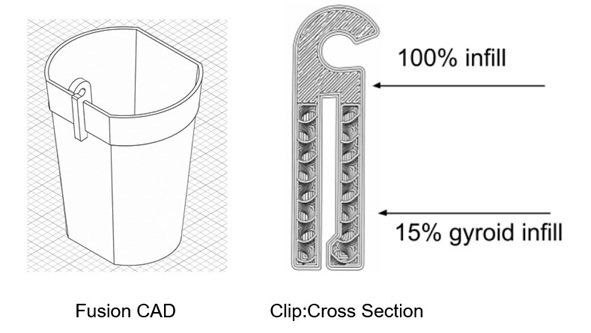

Modular Recycled Drip Irrigation Pot System
This project is a modular gardening system using 3D printed PETG pots with custom 3D printed clips that attach standard 1/4-inch drip irrigation tubing without additional hardware. The pots were designed to fit inside reused commercial nursery carrying trays commonly discarded by large garden centers. By locking the pots into the tray footprint, the system reduces tipping and movement during outdoor wind exposure, allows pots to be quickly transferred between carriers, and makes it easy to transport plants indoors during winter growing under artificial light. Empty pots and trays are stackable for compact storage.
The irrigation clips are removable and printable separately to reduce material waste and simplify repairs or customization. The system also reuses parts from an older drip irrigation setup including 1/4-inch tubing, 0.5 GPH drippers, and inline valves, helping reduce waste and cost.
The pots were designed while learning Autodesk Fusion CAD software and focus on balancing strength, durability, print time, and minimal filament use. Multiple design revisions were tested to improve print efficiency while maintaining structural strength. The hose clips use gyroid infill with localized 100% density reinforcement at stress points to improve durability while reducing material use. Approximate print costs are $0.05 per clip and $1.56 per pot
